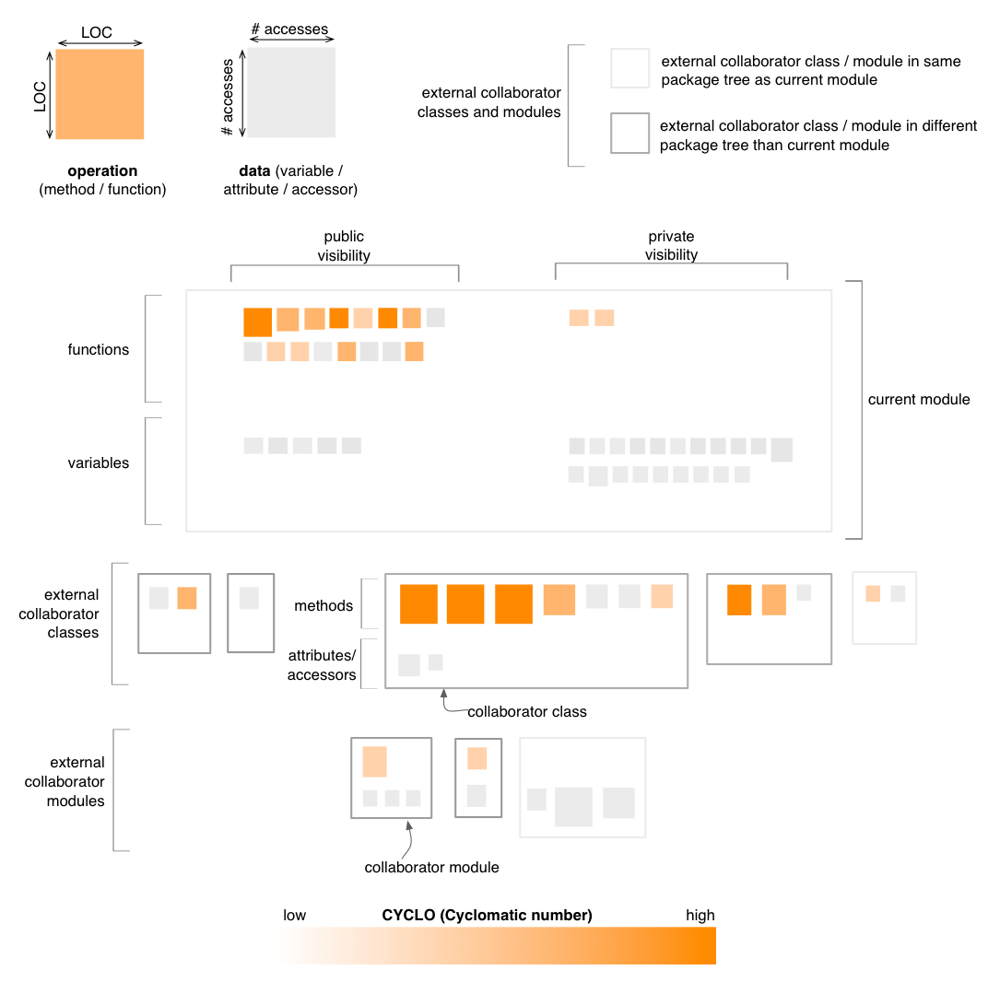

Module Map - Complexity Perspective
The Complexity Perspective of the Module Map colors all operations in
the map, including those belonging to collaborator classes and modules,
based on their CYCLO (Cyclomatic Number) metric values. This coloring
uses a white to orange gradient, with darker shades of orange for
higher CYCLO values.

Entity selection
The user may select an operation or a data in the map, in
which case the selected entity is colored in green. Everything else
remains the same.
Other quality perspectives
Cohesion, Coupling,
Design Flaws, Encapsulation
Metrics used
CYCLO, LOC